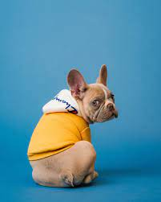
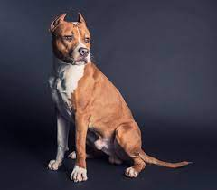
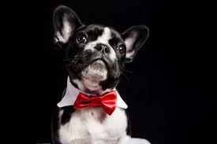
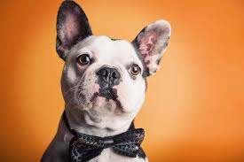

BIENVENIDOS A NUESTRO CLUB
Los animales son confiables, están llenos de amor, afectivos, predecibles en sus acciones, agradecidos y leales. (Alfred A. Montapert)
Lo ultimo de nuestro blog

Los animales necesitan cariño
Camina con tu mascota
Para muchos de nosotros las mascotas no son simples compañeros, son miembros de la familia.

Sam

Tom

Jerry
